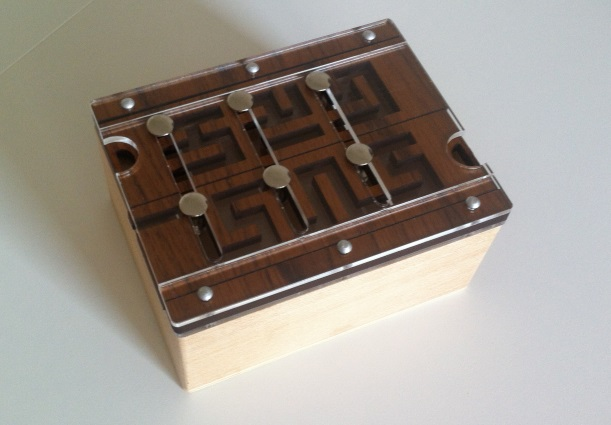
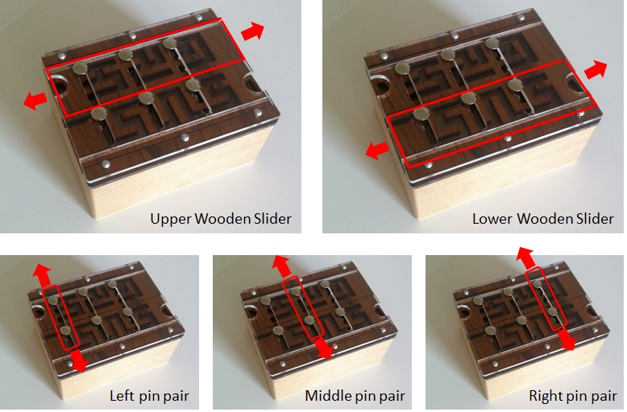
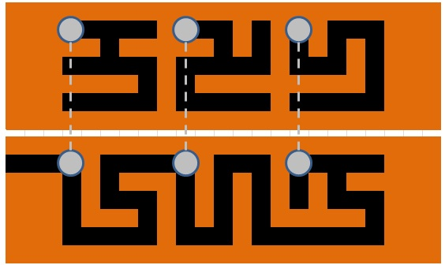
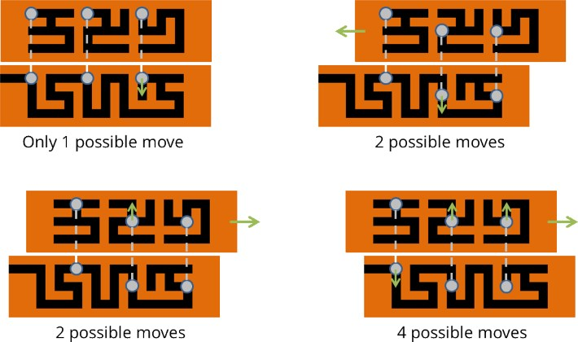
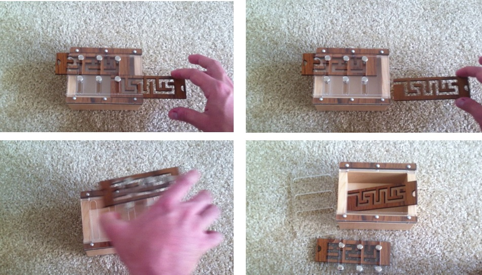
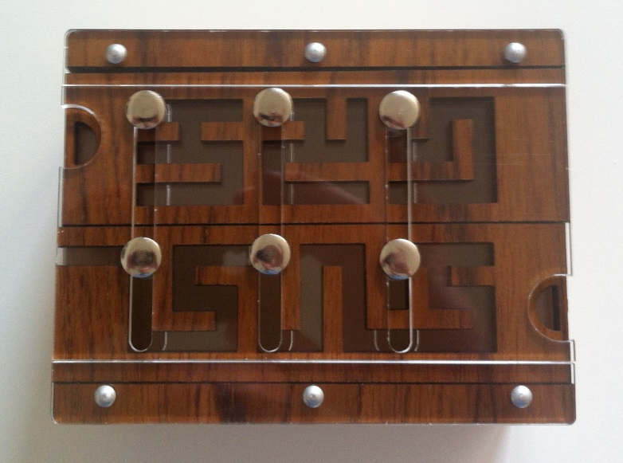
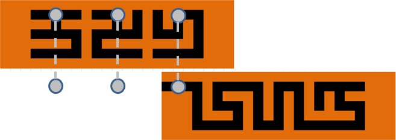

The "Laby Box" is an interesting mechanical puzzle. Though formally it's hard to classify – yes, there are classification schemes for puzzles – it is fairly simple to describe:

In this state, it's not possible to open the box. However, the lid has five moving elements: Two wooden sliders that can move from left to right, and three pairs of pins that can move up or down (the pins always move in fixed pairs).

Here's a more schematic view from the top:

As you can see on the photos, each wooden slider has a maze-like structure cut into it corresponding to the black areas in the schematic. The pins go through this maze structure. Therefore, the wooden sliders and pins cannot move independently of each other: A movement of a wooden slider might be restriced by a pin or a pin movement might be restricted by a slider, as illustrated in the following examples (keep in mind that the pins are connected as pairs, so if one of the two paired pins can't move in a certain direction, neither can the other):

You can also watch a video here to further illustrate how the box works.
Notice that the lower slider has an opening on the left side. Through a series of moves on the pins and sliders, it is actually possible to remove the second slider from the box. The box is very cleverly designed such that removal of the second slider will actually allow you to open it.

Now let's say you are presented with the boy in the following configuration:

You could, of course, solve this puzzle through logic and patience. But that's not what we're here for. Rather, let's write a Python program to do it for us!
To help you get started, here are the two sliders encoded into Python lists, where a 1 represents solid wood and a 0 a cutout:
slider_1 = [
[1, 1, 1, 1, 1, 1, 1, 1, 1, 1, 1, 1, 1, 1, 1, 1, 1, 1, 1, 1, 1, 1, 1],
[1, 1, 1, 0, 0, 0, 0, 0, 1, 0, 0, 0, 1, 0, 1, 0, 1, 0, 0, 0, 1, 1, 1],
[1, 1, 1, 1, 1, 0, 1, 1, 1, 1, 1, 0, 1, 0, 1, 0, 1, 0, 1, 0, 1, 1, 1],
[1, 1, 1, 0, 0, 0, 0, 0, 1, 0, 0, 0, 0, 0, 1, 0, 0, 0, 1, 0, 1, 1, 1],
[1, 1, 1, 1, 1, 1, 1, 0, 1, 0, 1, 1, 1, 1, 1, 1, 1, 1, 1, 0, 1, 1, 1],
[1, 1, 1, 0, 0, 0, 0, 0, 1, 0, 0, 0, 0, 0, 1, 0, 0, 0, 0, 0, 1, 1, 1],
[1, 1, 1, 1, 1, 1, 1, 1, 1, 1, 1, 1, 1, 1, 1, 1, 1, 1, 1, 1, 1, 1, 1]
]
slider_2 = [
[1, 1, 1, 1, 1, 1, 1, 1, 1, 1, 1, 1, 1, 1, 1, 1, 1, 1, 1, 1, 1, 1, 1],
[0, 0, 0, 0, 1, 0, 0, 0, 0, 0, 1, 0, 0, 0, 1, 0, 0, 0, 0, 0, 1, 1, 1],
[1, 1, 1, 0, 1, 0, 1, 1, 1, 0, 1, 0, 1, 0, 1, 0, 1, 0, 1, 1, 1, 1, 1],
[1, 1, 1, 0, 1, 0, 0, 0, 1, 0, 1, 0, 1, 0, 1, 0, 1, 0, 0, 0, 1, 1, 1],
[1, 1, 1, 0, 1, 1, 1, 0, 1, 0, 1, 0, 1, 0, 1, 1, 1, 1, 1, 0, 1, 1, 1],
[1, 1, 1, 0, 0, 0, 0, 0, 1, 0, 0, 0, 1, 0, 0, 0, 0, 0, 0, 0, 1, 1, 1],
[1, 1, 1, 1, 1, 1, 1, 1, 1, 1, 1, 1, 1, 1, 1, 1, 1, 1, 1, 1, 1, 1, 1]
]
1) Write a program that outputs a series of moves/instructions that get you from the starting configuration to the following target configuration (where the second slider can easily be pulled out of the box):

2) Let's call one single motion of a wooden slider or pin a "move" (no matter how far or where you move that pin or slider). For example, moving the upper slider, then the middle pin, and then the upper slider again would count as three moves. What's the minimum number of moves to get from the starting configuration to the target configuration of Problem 1?
3)) Having solved the secret of the puzzle box, you now want to pose a challenge to your friend. Since you are devious, you want to put the box back together into a configuration that will take the most moves to solve, i.e., the hardest initial configuration (because it takes the most moves to come to a solution). Since you love aesthetics, too, both sliders must be in their original position, i.e., not overlap the box anywhere. What is this hardest possible configuration? Is it unique?
If you have a solution you'd like to share see the Solutions page for instructions.